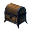

Шкатулка с минералами
Предметы / Обмен
Открыть в интерактивной вики →
| Вес | 1 |
|---|---|
| Цена | 0 |
Описание
Может стать ценным даром для такого любителя камней, как  Дрессировщик Питер.
Дрессировщик Питер.
Обмен 1х шкатулка на 22к опыта питомцу.
Получить можно во время ивентов, во время выполнения заданий.
Дрессировщик Питер. Обмен 1х шкатулка на 22к опыта питомцу.
Получить можно во время ивентов, во время выполнения заданий.
| Для любителя камней вроде дрессировщика Питера это может быть ценной вещью. |
Применение
|
Как добыть
| - |